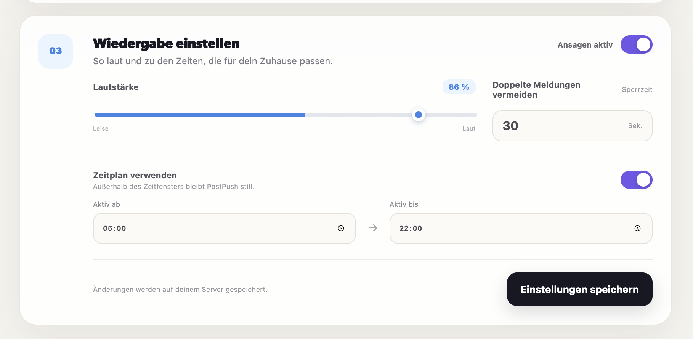

Say it your way.
Type any announcement for local Piper speech, or upload MP3, WAV, M4A, AAC, FLAC, or OGG.
Turn a mailbox sensor event into a spoken message or custom sound on selected HomePods and AirPlay speakers — synchronized, configurable, and entirely under your control.

Everything needed for a personal, reliable mailbox announcement — without sending text, audio, or settings to another service.
Type any announcement for local Piper speech, or upload MP3, WAV, M4A, AAC, FLAC, or OGG.
Choose individual HomePods, AirPlay speakers, and compatible Sonos devices — or include every new speaker automatically.
Set the volume, active hours, and cooldown, then test the complete flow directly from the browser.
Speech, audio, and configuration stay on your server. The project website uses no analytics, cookies, or trackers either.
Running at homePostPush connects the services already running at home and keeps the complete flow inside the local network.
Home Assistant publishes a non-retained event to the configured MQTT topic.
It checks the schedule and cooldown, then uses local speech or the uploaded audio file.
The announcement plays across the selected AirPlay speakers at the configured volume.
See MQTT, AirPlay, and audio health at a glance, choose exactly where the message should play, and review the latest mailbox event.

Use the guided Runtipi experience or run the same container with Docker Compose. Both keep everything on your server.
https://github.com/alexholzreiter/postpushgit clone https://github.com/alexholzreiter/postpush.git
cd postpush
cp .env.example .env
docker compose up -dPostPush runs on hardware you control. Piper creates speech locally, and MQTT events, audio files, and settings never pass through our servers.
The practical details before mailbox announcements arrive in every room.
Yes. OwnTone discovers HomePod and HomePod mini models as AirPlay 2 outputs. They must be reachable from the server on the same network or through correctly routed mDNS.
Yes. Select any combination of discovered AirPlay speakers or automatically include every available output. Volume is configurable as well.
Yes. PostPush generates the configured announcement locally with Piper, or it can play an uploaded MP3, WAV, M4A, AAC, FLAC, or OGG file.
A Home Assistant automation publishes a non-retained message to the configured MQTT topic when the mailbox sensor detects mail.
No. Piper creates speech locally, settings stay on the server, and OwnTone sends audio directly to speakers on the home network.
Free, open source, and ready for your Runtipi or Docker server.